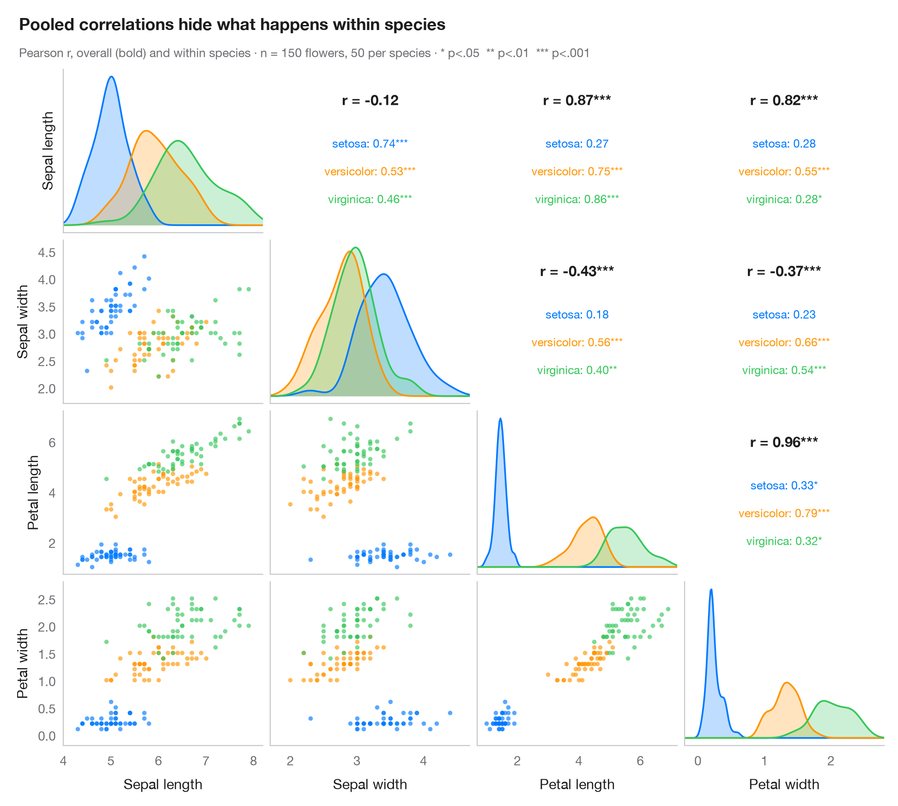

Matrice de nuages de points avec corrélations
Matrice de nuages de points avec densités par groupe sur la diagonale et coefficients de corrélation au-dessus.

L'équivalent Python de GGally::ggpairs(). Chaque paire de variables obtient un nuage de points sous la diagonale, coloré par groupe ; la diagonale montre la densité de chaque variable par groupe ; et la cellule symétrique au-dessus de la diagonale affiche le r de Pearson, global (en gras) et au sein de chaque groupe, avec des étoiles de significativité. Tout l'intérêt est de comparer les deux : les corrélations globales et intragroupes peuvent différer fortement — jusqu'à changer de signe — lorsque les groupes occupent des régions différentes du graphique.
Les données sont les mesures d'iris de Fisher fournies avec scikit-learn (load_iris), soit 150 fleurs de trois espèces. Les densités utilisent scipy.stats.gaussian_kde et les corrélations scipy.stats.pearsonr ; la grille est un simple plt.subplots(4, 4).
Le code et le texte à l'intérieur des figures sont en anglais.
import matplotlib.pyplot as plt
import numpy as np
from scipy import stats
from sklearn.datasets import load_iris
# Data: Fisher's iris (bundled with scikit-learn)
iris = load_iris(as_frame=True)
df = iris.frame.rename(columns=lambda c: c.replace(" (cm)", "").capitalize())
df["species"] = iris.target_names[iris.target]
cols = df.columns[:4]
species, palette = ["setosa", "versicolor", "virginica"], ["#007AFF", "#FF9500", "#34C759"]
stars = lambda p: "***" if p < .001 else "**" if p < .01 else "*" if p < .05 else ""
fig, axes = plt.subplots(4, 4, figsize=(9.5, 8.6), sharex="col")
lims = {c: (df[c].min() - 0.3, df[c].max() + 0.3) for c in cols}
fig.get_layout_engine().set(rect=(0, 0, 1, 0.92), w_pad=0.04, h_pad=0.04)
for i, yv in enumerate(cols):
for j, xv in enumerate(cols):
ax = axes[i, j]
ax.grid(False)
if i == j: # diagonal: KDE per species
grid = np.linspace(*lims[xv], 200)
for s, c in zip(species, palette):
dens = stats.gaussian_kde(df.loc[df.species == s, xv])(grid)
ax.fill_between(grid, dens, color=c, alpha=0.25, lw=0)
ax.plot(grid, dens, color=c, lw=1.3)
ax.set_yticks([])
elif i > j: # lower: scatter by species
for s, c in zip(species, palette):
d = df[df.species == s]
ax.scatter(d[xv], d[yv], s=12, color=c, alpha=0.65, lw=0)
ax.set_ylim(lims[yv])
else: # upper: correlation coefficients
r, p = stats.pearsonr(df[xv], df[yv])
ax.text(0.5, 0.78, f"r = {r:.2f}{stars(p)}", ha="center", fontsize=11,
fontweight="semibold", transform=ax.transAxes)
for k, (s, c) in enumerate(zip(species, palette)):
d = df[df.species == s]
rs, ps = stats.pearsonr(d[xv], d[yv])
ax.text(0.5, 0.52 - k * 0.17, f"{s}: {rs:.2f}{stars(ps)}", ha="center",
fontsize=9, color=c, transform=ax.transAxes)
ax.tick_params(labelbottom=False, labelleft=False)
for sp in ax.spines.values():
sp.set_visible(False)
if i < 3:
ax.tick_params(labelbottom=False)
if j > 0 or i == 0:
ax.tick_params(labelleft=False)
if i == 3:
ax.set_xlabel(xv)
ax.set_xlim(lims[xv])
if j == 0:
ax.set_ylabel(yv)
fig.text(0.01, 0.985, "Pooled correlations hide what happens within species", fontsize=13,
fontweight="semibold", va="top")
fig.text(0.01, 0.945, f"Pearson r, overall (bold) and within species · n = {len(df)} flowers, 50 per "
"species · * p<.05 ** p<.01 *** p<.001", fontsize=9.5, color="#6E6E73", va="top")
plt.show()
Les figures utilisent le style Statlas (facultatif) : ajoutez plt.style.use("statlas.mplstyle") pour obtenir exactement le même rendu.
Comment citer
Statlas est créé et maintenu par Thierry Warin. S'il vous a été utile dans vos travaux, merci de le citer.
Warin, T. (2026). Pairs plot with correlations. In Statlas: The Python Gallery of Statistical Graphics. https://warint.github.io/pystatlas/correlation/pairs-plot/
@misc{warin2026statlas,
author = {Warin, Thierry},
title = {Statlas: The Python Gallery of Statistical Graphics},
year = {2026},
howpublished = {\url{https://warint.github.io/pystatlas/}},
note = {Source code: https://github.com/warint/pystatlas}
}Plus dans Corrélation et association

Matrice de corrélation
Carte de chaleur triangulaire des corrélations de Pearson ; les cellules non significatives (Holm) sont barrées.
ggstatsplot::ggcorrmat()
Nuage de points avec statistiques
Nuage de points, droite des MCO avec bande à 95 % et histogrammes marginaux, avec le r de Pearson en sous-titre.
ggstatsplot::ggscatterstats()
Corrélogramme avec classification
Cercles à la corrplot, dimensionnés et colorés selon r, ordonnés par classification hiérarchique.
corrplot::corrplot(order = "hclust", addrect = 3)